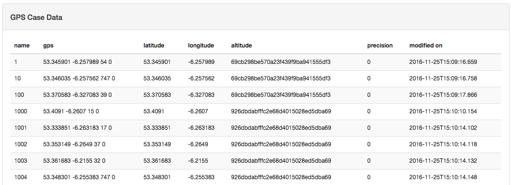
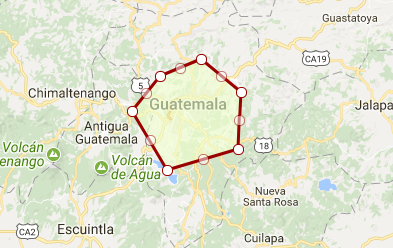

class: center, middle # Building a Commcare integration --- # Materials ### All materials are available on the github page: ### [https://github.com/ml9951/commcare-integration-demo.git](https://github.com/ml9951/commcare-integration-demo.git) ```bash git clone https://github.com/ml9951/commcare-integration-demo.git ``` - Note: requires Python and PostgreSQL to be installed --- # Agenda 1. Setup a PostgreSQL database to store data 2. Retrieve data from the Commcare API 3. Keep database in sync with Commcare API 4. Setup PostGIS extension --- # Commcare API - The Commcare API Documentation can be found at [https://confluence.dimagi.com/display/commcarepublic/CommCare+HQ+APIs](https://confluence.dimagi.com/display/commcarepublic/CommCare+HQ+APIs) - The [`simplereportconfiguration`](https://confluence.dimagi.com/display/commcarepublic/List+Reports) endpoint will show all reports that are available for a given project - The [`configurablereportdata`](https://confluence.dimagi.com/display/commcarepublic/Download+Report+Data) endpoint will allow us to pull data from Commcare --- # Setting up a database 1. A relational database naturally conforms to the format of Commcare reports - We'll be using PostgreSQL - PostgreSQL is open source and has some handy extensions for working with spatial data ```BASH createdb commcare-demo ``` 2. Add the [PostGIS](http://postgis.net/) extension - PostGIS provides spatial datatypes and functions that we'll use later ```BASH psql commcare-demo -c "CREATE EXTENSION postgis;" ``` --- # Commcare Report - In this demo, we'll be using the `GPS Case Data` report from the `atlas-api-demo` project. - [https://www.commcarehq.org/a/atlas-api-demo/dashboard/project/](https://www.commcarehq.org/a/atlas-api-demo/dashboard/project/)  --- # Creating a table 1. We will initialize our table with an Excel export from the Commcare report builder 2. Then import the Excel file into PostgreSQL using a simple Python script. ```Python # Rename columns to something that is PostgreSQL compliant def renameCol(col): col = col.split('/')[-1] return re.sub(' +', '_', col.lower()) if __name__ == '__main__': # Get all .xlsx files for file in glob.glob('data/*.xlsx'): # Import the file into a Dataframe df = pandas.read_excel(file) #Create PostgreSQL compliant names df.columns = map(renameCol, df.columns) table_name = renameCol(os.path.splitext(os.path.basename(file))[0]) print('Creating %s' % table_name) #Write the dataframe to PostgreSQL df.to_sql(table_name, engine, if_exists='replace', index=False) ``` --- # Saving the schema - This initial process can be tedious. - Save the schema using the `pg_dump` command ```BASH pg_dump commcare-demo --schema-only -f init.sql ``` - This will create an SQL script that will recreate all tables in the database. --- # Keeping your database in sync with Commcare - When new data gets pushed to Commcare, we would like to automatically update our database - The Commcare API provides filters to help with this. --- # Get the available filters - We can use the provided Python client to find out what filters are available on our report using the `simplereportconfiguration` endpoint ```Python # Get the user's password and create the Commcare client. username = input('Enter username: ') pw = getpass('Enter password: ') # Create the client object client = Commcare(username, pw, 'atlas-api-demo') #List reports and save to file report = client.listForms() json.dump(report, open('reports.json', 'w'), indent=2) ``` --- # Example `reports.json` ```JSON { "meta": { "total_count": 3 }, "objects": [ { "title": "GPS Case Data", "resource_uri": "/a/atlas-api-demo/api/v0.5/simplereportconfiguration/988058bd3248104e3114ecac4b3fc674/", "filters": [ ... { "datatype": "string", "type": "date", "slug": "modified_on_6457b79c_2" } ], "columns": [ ... ] } ... ] ... } ``` --- # Using filters - In order to keep our database up to date, we want to only retrieve the new data points through the API. - We'll use the `modified_on_6457b79c_2` filter we saw in `reports.json` to do this - The [`configurablereportdata`](https://confluence.dimagi.com/display/commcarepublic/Download+Report+Data) endpoint documentation contains more info on how to do this. #### Example: ```Python filter = { 'modified_on_6457b79c_2-start' : '2017-01-01', 'modified_on_6457b79c_2-end' : '2017-07-13' } ``` --- # Updating the database 1. Fetch the newest record in the table 2. Use that as the `start` date in the range filter #### Example ```Python from datetime import datetime from commcare import Commcare import psycopg2 conn = psycopg2.connect(dbname='commcare-demo') cursor = conn.cursor() client = Commcare(username, password, 'atlas-api-demo') cursor.execute('SELECT MAX(modified_on) FROM gps_case_data') start_date, = cursor.fetchone() # Create the filter filter = client.mkDateRange(start_date, datetime.now()) for rows in client.getReport('988058bd3248104e3114ecac4b3fc674', filter=filter): insertRows(rows) ``` --- # Automating the update process <div style="display: flex; align-items: center" > <img src="images/serverless.png"/> </div> - The serverless architecture is an ideal framework for automating this process - Host code without managing or provisioning servers --- # AWS Lambda - AWS Lambda is a platform for running "microservices" - Currently supports Python, Node.js, Java, and C# - Users upload a zip file containing a file with a single function along with some configuration files - Amazon takes care of provisioning and scaling servers --- # AWS Lambda - Upload a single function to be run when an event is triggered - Events can include: - Scheduled Events - API Gateway requests - Many others... ```Python from demo import updateTable def handler_name(event, context): updateTable() return {'message' : 'Success'} ``` - Schedule the lambda function to execute on a given interval (Ex: 5 min.) --- # Serverless - [Many frameworks](https://github.com/anaibol/awesome-serverless#frameworks) exist for abstracting providers - The aim is to be able to run your functions on multiple platforms (Ex: AWS, Google Cloud, Azure, etc.) --- # PostGIS - PostGIS is a PostgreSQL extension that adds spatial datatypes and functions. - Data can now be represented as a spatial geometry (Point, Line, Polygon, etc.) ``` POLYGON(( -90.582275390625 14.7084781979703, -90.6591796875 14.6168070828727, -90.5630493164062 14.4599476324892, -90.3680419921875 14.5144622637317, -90.3611755371094 14.6672973726158, -90.4710388183594 14.7523073141749, -90.582275390625 14.7084781979703 )) ```  --- # Spatial Indexing - One of the primary benefits of PostGIS is the use of spatial indexing - Spatial indexes substantially improve performance of spatial queries .center[] --- # PostGIS Documentation - More documentation can be found on the PostGIS extension at [http://postgis.net/docs/manual-2.3/](http://postgis.net/docs/manual-2.3/)